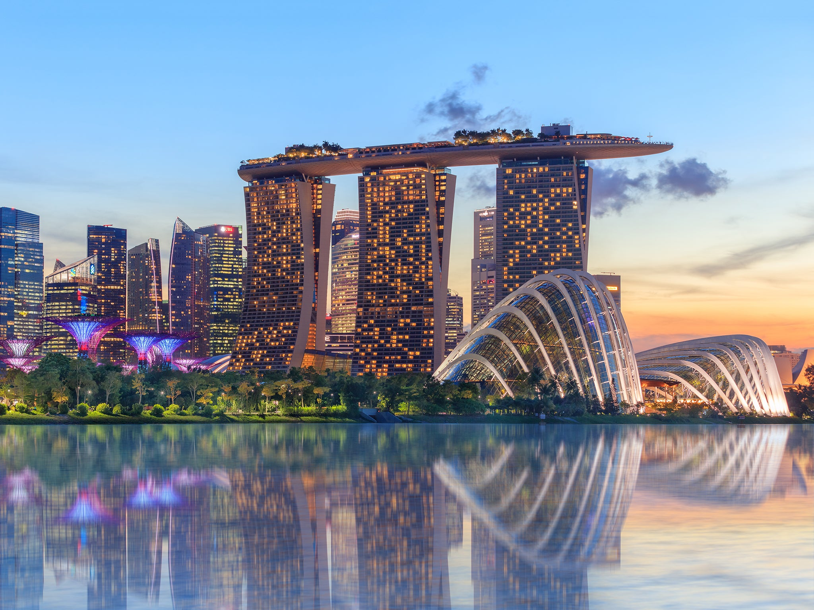
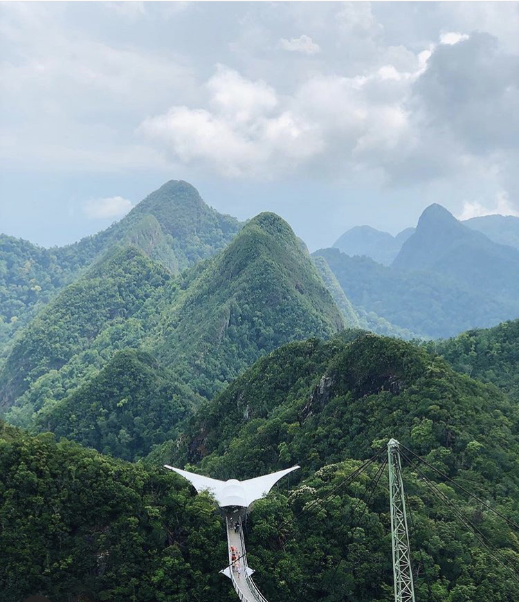
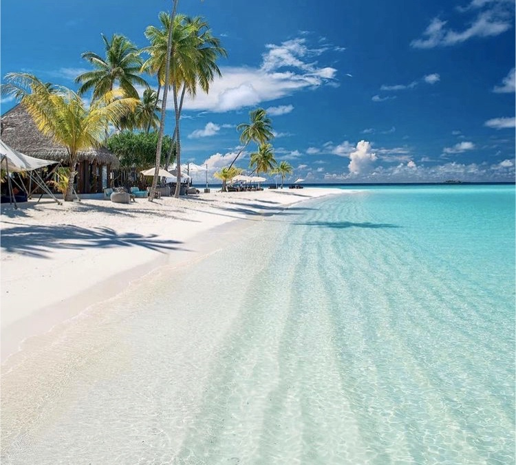

My name is Aneesa and I am a travelholic and a foodie. I am from cosmopolitan London and have an insatiable desire for traveling. I have travelled over 30 countries and i am knocking off some big adventures off my bucket list. Having spent time visiting different countries, i have an understanding of different cultures and traditions. My love for cooking started when I have been traveling different parts of the world and trying different cuisine. I strongly believe that travelling broadens the mind and I would like share my recipes with you.
XOXO
Aneesa
Singapore is a beautiful island with delightful culinary experiences, street food, state-of-the-art accommodations, luxury lifestyle and exciting nightlife. A city with a reputation for cleanliness, Singapore has a lot of attraction to visit such as Garden by the Bay, Cloud Forest, Marina Sands and many more.
Langkawi is made up 99 islands. It is surrounded by turquoise sea, waterfalls, mesmerising jungle-clad hills, paddy fields, forest and fine sand. Night markets are very popular in Langkawi. Lots of tropical fruits and a varity of local dishes. As shown below, a view from the steepest cable carride on earthand takes visitirs up to 708m above sea level.
Maldives consists of 1190 island and is a paradise on water. Calm crystal waters and white sand, it is a dream come true holiday. It is the ultimate destination for snokeling and deep sea diving with sea turtle, manta rays and friendly baby sharks.
Mauritius is a tropical paradise with many places to explore from traveling to the top of the volcano, swimming on with dolphines, climbing mountains and seeing breathing views. A holiday what would not disappoint.
I would like to introduce a special mix spice, to help you add to your recipes.
For Wholesale enquiry, please email me on aneesa7@gmail.com otherwise fusion spice products are available from Tesco, Sainsbury and Waitrose.